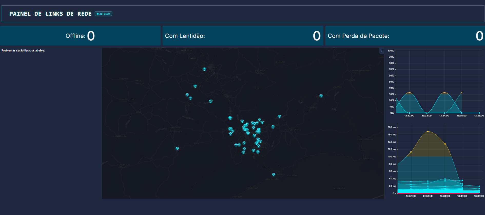

Grafana · Zabbix
Detalhes do projeto ↗
Painel de Monitoramento de Infraestrutura
Montei o principal painel da empresa, permitindo identificar e resolver problemas antes que afetem a operação diária.